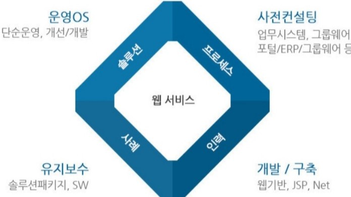

웹서비스 소개

고객의 경영환경과 사업의 니즈에 최적화한 비즈니스 프로세스를
설계와 이를 반영한 IT서비스를 제공하고자 합니다.
운영과 개발을 목적으로 구축은 JSP와 웹을 기반으로 웹서비스를 제공하여
좀 더 사업에 도움이 되고자 합니다.
웹서비스 사례 : AWS
Amazon 클라우드 서비스 아마존 웹 서비스(Amazon Cloud Services)란? 아마존 웹 서비스(AWS)는 안전하고 신뢰할 수 있으며 쉽고 빠른 확장성과, 비용을 절감할 수 있는 플랫폼을 ‘Cloud’로 제공하고 있습니다. 확장성이 뛰어나고 신뢰도가 높은 IT 솔루션을 배포할 수 있도록 AWS에서 인프라를 관리 할 수 있게 합니다. 아마존 웹 서비스 사용 시에는 선 비용이나 장기 약정 없이 사용하는 만큼만 지불 할 수 있습니다.
웹서비스를 위해 필요한 기술
- 정보처리기사1급
- 웹디자인
- GTQ
- html/css
- java script